第393篇•2013年市场回顾与未来展望（1）
——兼对100只大牛股深度分析
谷为陵
上周日，我在一个股市沙龙做了一个《2013年市场分析与未来展望》的主题发言，受到了大家的欢迎，现在我就将该发言的PPT稿件整理出来，供大家参考。
我在本文中要讨论的核心问题，是对于一年来股市里出现的大牛股进行系统性地分析。我们进入股市的根本目的就是为了赚钱，而在股市赚钱的一个基本方法就是抓大牛股，抓大牛股的主升浪，这也是我的博客的一个中心议题。通过对于这些大牛股的分析，我发现了一些市场长久以来的流行性谬论，也发现了一些牛股的必备基因，这些对于投资者今后选股都是大有脾益的。若本文能够提供给大家一些分析股市的新的视角，给大家一些新的启示，那就算没有枉费我的一番苦心了。
第一部分2013年市场回顾
一、市场回顾
1、四种指数走势比较（2012.12.1～2013.12.27）
为了对于沪深A股的四个市场走势进行比较，我将深成指、上证指数、中小板、创业板自2012年12月1日至2013年12月27日这一年来的走势进行了叠加，如下图：
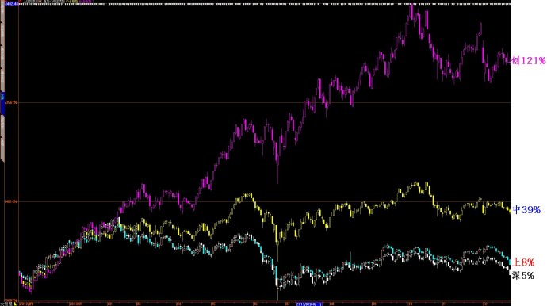
从上图可见，深成指、上证指数、中小板、创业板这一年来的涨幅分别为5%、8%、39%、121%，若仅根据这些数据，我们不难得出这样的结论，那就是深成指与上证指数今年是处于振荡市场，非牛非熊，中小板是中级上涨行情，而创业板属于牛市。
2、个股走势比较
|
股票总数
|
上涨数量
|
下跌数量
|
涨幅大于
100%数量
|
跌幅大于
20%数量
|
|
2433
|
2044
|
389
|
358
|
106
|
|
100%
|
84%
|
16%
|
14%
|
4.4%
|
二、牛股统计
1、翻倍牛股统计（2012.12.1—2013.12.27）
|
|
股票数量
|
翻倍牛股
|
占股票比例
|
占牛股比例
|
|
沪市主板
|
913
|
75
|
8%
|
20%
|
|
深市主板
|
466
|
30
|
6%
|
8%
|
|
中小板
|
701
|
113
|
16%
|
32%
|
|
创业板
|
355
|
140
|
39%
|
39%
|
|
合计
|
2435
|
358
|
15%
|
100%
|
2、358只翻倍牛股指数
（1）358只翻倍牛股指数（2006.11-2013.12）
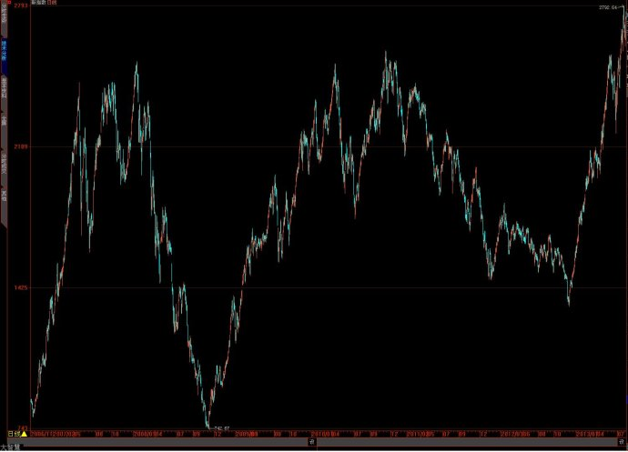
（2）358只翻倍牛股指数（2012.12-2013.12）
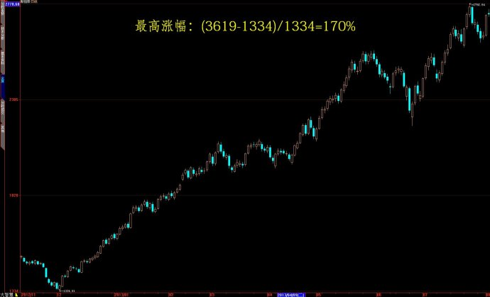
3、2013年涨幅最高100只大牛股统计
在358只翻倍牛股中，涨幅最高的100只大牛股（简称“涨幅最高100股”）的涨幅分布范围为175%～550%，平均涨幅为334%。以下是该100只大牛股的指数：
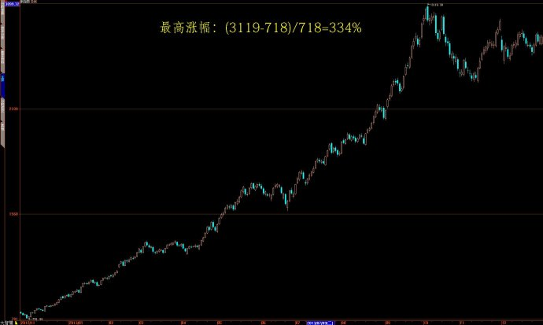
4、“358只翻倍牛股+涨幅最高100股”指数叠加图
我将以上的“358只翻倍牛股”与 “涨幅最高100股”进行了比较，做出了它们的叠加指数图。358只翻倍牛股中包含了
“涨幅最高100股”，我比较它们的目的，实际为了观察它们的走势是从哪里开始分化的，其叠加走势如下图所示。其中，“走势1”为“涨幅最高100股”，“走势2”为“358只翻倍牛股”：
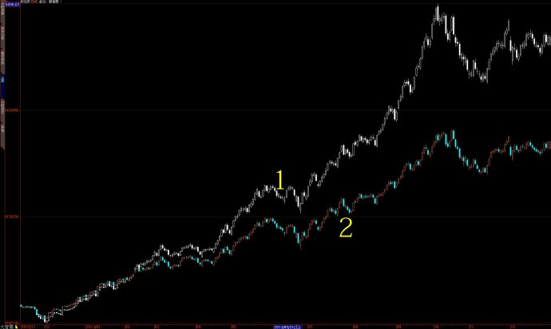
可见，自2012年12月至2013年，“走势1”与“走势2”是重合的，这说明这“358只牛股”的走势还未出现分化。但到了今年4月后，“走势1”就开始领先于“走势2”，说明
“涨幅最高100股”开始了一轮更大大规模的上涨行情，而其余的258只牛股的涨势就相对逊色了。那么，在今年4月后，到底是哪些牛股脱颖而出了呢？主要是以手游、影视传媒为代表的TMT板块。从图中还可以看出，不管是“走势1”，还是“走势2”，到了今年10月份，上涨趋势都告一段落，进入了调整期，至于这次调整期有多长，那就因股而异了——涨得多的，调整期就长；涨的少的，调整期短。当然，还应该有不少股票恐怕已经见了大顶。
二、“涨幅最高100股”的成因分析
1、每股收益分析
问题：是不是每股收益越高的股票，成为牛股的可能性越大？
为此，我先找出了A股每股收益前100只股票，其每股收益分布为0.87～10.97元。而“涨幅最高100股”每股收益分布为-0.15～1.23元，其中，每股收益0.5元以上21只，0.1～0.5元55只，亏损5只。
结论：“涨幅最高100股”与每股收益高的相关性不高。另外，每股收益高这个单独因素并不足以产生牛股。
下面是“涨幅最高100股”与“每股收益前100只股票”指数叠加图：
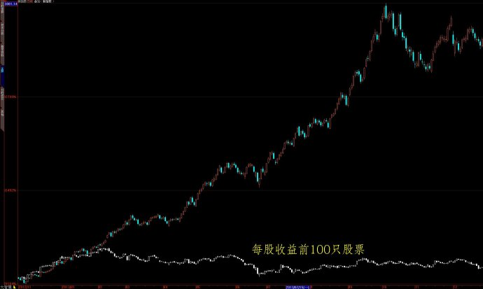
可见，每股收益最高的前100只股票构成的指数，在一年来的走势是很差的，几乎没有上涨。
2、市盈率分析
问题：是否低市盈率股票易于产生牛股？
为此，我先找出了市盈率最低的100只股票，其市盈率分布为4～9.86倍，也就是说，这100只股票市盈率都是低于10倍。而“涨幅最高100股”市盈率分别为：高于100倍38只，50～100倍34只，20～50倍23只，5只亏损股股。
结论：“涨幅最高100股”与低市盈率（低估值）相关性不高。另外，低市盈率这个单独因素并不足以产生牛股。
下面是市盈率最低的100只股票指数走势图：
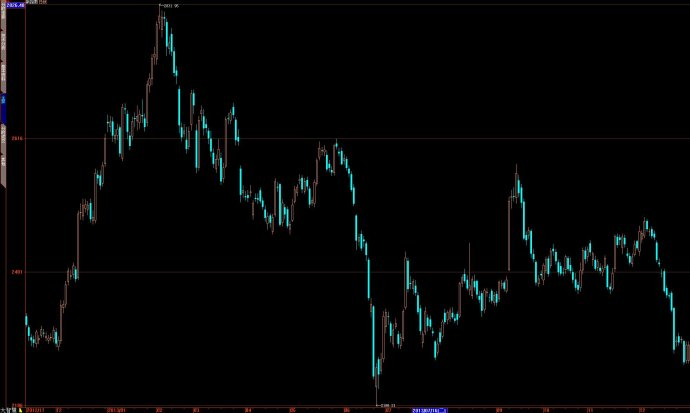
下面是“涨幅最高100股+市盈率最低100只股票”指数叠加图：
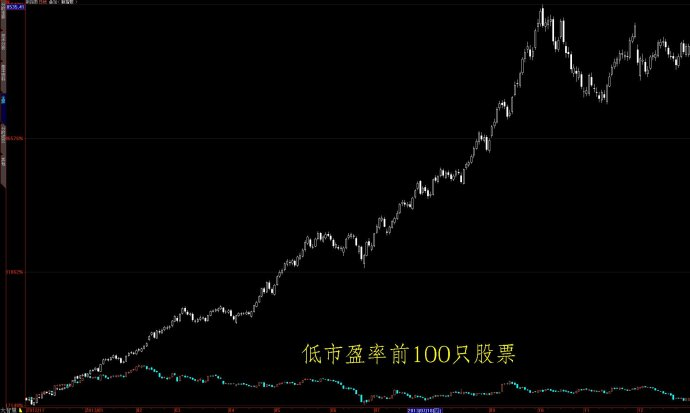
可见，市盈率最低的100只股票构成的指数，在一年来的走势是很差的，几乎没有上涨。
3、销售毛利率分析
问题：是否销售毛利率高的股票易于产生牛股？
为此，我找出了A股销售毛利率最高的前100只股票，其毛利率在67%～99.97%。而涨幅前100大牛股中，毛利率高于50%有25只，其中高于67%的只有2只。
结论：“涨幅最高100股”与高毛利率相关性不高。另外，高毛利率这个单独因素并不足以产生牛股。
下面是“毛利率最高100股+涨幅最高100股”指数叠加图：
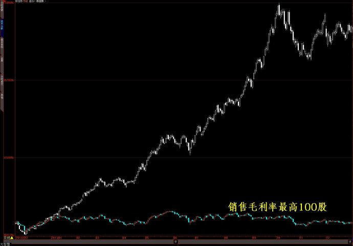
4、高成长性分析
问题：高成长股是否易于产生牛股？
由于主营收入增长率是衡量高成长性的最重要的指标，但是，主营收入增长率高，并不意味着企业的真实成长性一定好，这是因为，当企业原来的业绩基数很低的时候，业绩的轻微改善就会造成极高的增长率。为此，为了找到更加真实的成长性，就需要添加一些限定条件，我给出的限定条件是今年三季报的每股收益必须在0.2元以上。根据这两个原则，我找出了A股每股收益0.2元以上，且主营收入增长率最高的100只股票(简称“高成长100股”)，它们的主营收入增长率都在50%以上，属于高增长率公司。
而“涨幅最高100股”中主营收入增长率高于50%的只有18只，另外，还有主营收入负增长的18只。也就是说，“涨幅最高100股”中只有约25%的股票进入了主营收入高增长行列，其整体并非属于高增长群体。但应该注意的是，这也许并非终极结果，因为以上计算仅仅是运用了静态的三季报数据的结果，该结果并未体现股票未来的潜在的成长性。比如，在“涨幅最高100股”中，就存在不少重组股与资产注入股，这些股票的业绩还未能及时在三季报体现出来，故其成长性就无法谈起，所以，对于“涨幅最高100股”的成长性问题，还是需要进行更加细致的修正工作的，但因时间所限，我就暂时无法进行这项工作了。
结论：仅从三季报来看，“涨幅最高100股”与高成长性相关性不高，但是，经过分析，我最终发现高成长性却是一个能够单独产生牛股的指标！也就是说，高成长股确实是牛股的温床！
下面是“高成长100股”指数走势图(2005年至2013年底)：
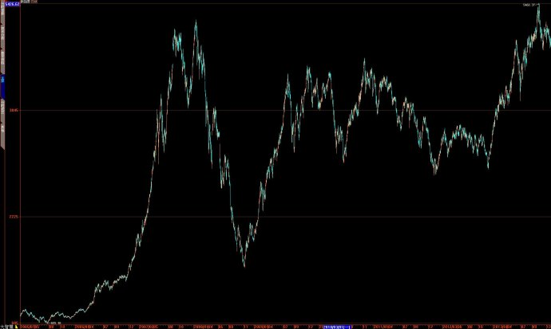
可见，仅仅利用“主营收入增长率”这个指标选出来的100只股票，其指数就在今年轻松超越了2007年的历史最高点，这说明从长期来看，高成长性是最终能够战胜市场的。
下面是“高成长100+涨幅100”指数叠加走势图（2012.12.1-2013.12.27）：
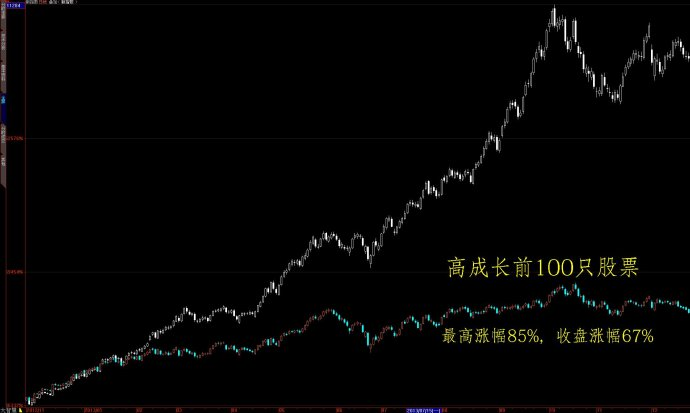
5、总股本分析
问题：牛股与总股本相关性高不高？是小盘股易于产生牛股吗？
为此，我统计了一下“涨幅最高100股”的总股本情况，其总股本分布范围为5700万股～14亿股，平均总股本约5亿股，这说明这100只股票属于中小盘股范畴，没有一只股票是大盘股（总股本30亿股以上）。
为了进一步检验牛股与总股本的关系，我又特地在A股中挑选了两类股票：一是总股本最大的前100只股票，其总股本分布范围为44～351亿股；二是总股本最小的前100只股票，其总股本分布范围为4000～11000万股。
结论：结果呢，我发现大盘股与牛股的相关性很低，而小盘股与牛股的相关性极高。
下面是总股本最大前100只股票指数图，其一年来的累计涨幅仅仅3%：
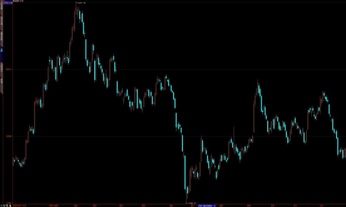
下面是总股本最小前100只股票指数图，其一年来的累计涨幅高达90%：
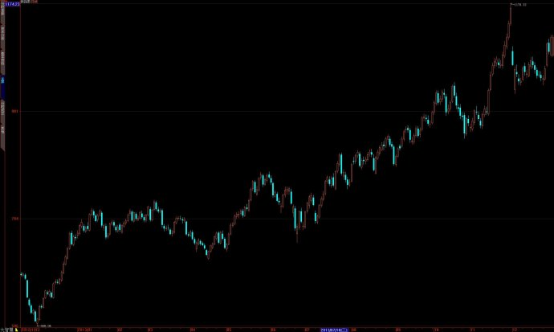
下面是“总股本最大100股+总股本最小100股+涨幅最高100股”的指数叠加图：
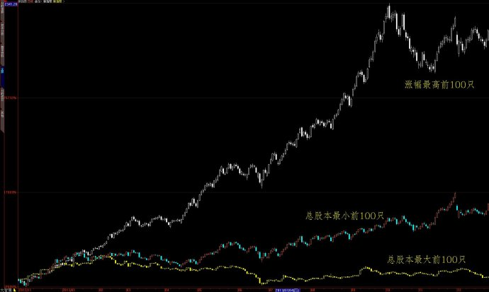
6、总市值与流通市值
问题：总市值与流通市值是否牛股相关？是否总市值小、流通市值小的，更加易于产生牛股？另外，总市值与流通市值哪一个更加关键？
为此，我统计了一下“涨幅最高100股”的总市值与流通市值情况，其总市值与流通市值分布范围分别为16～334亿元、8～260亿元。平均总市值与流通市值分别约为60～70亿元、30～40亿元。在“涨幅最高100股”中，总市值最高的是华谊兄弟，其总市值为339亿元，排在2435只A股中的99位；流通市值最高的是外高桥，其流通市值为261亿元，排在2435只A股中的101位。可见，
“涨幅最高100股”都不属于A股中总市值与流通市值最大的群体。
为了进一步检验牛股与总股本的关系，我又特地在A股中挑选了四类股票：一是总市值最大的前100只股票，其总市值分布范围为340亿元至1.4万亿元；二是流通市值最大的前100只股票，其流通市值分布范围为260亿元至1.2万亿元；三是总市值最小的前100只股票，其总市值分布范围为7.6亿元至13.6亿元；四是流通市值最小的前100只股票，其流通市值分布范围为3亿元至13.6亿元。
下面是“总市值最大100股+流通市值最大100股+总市值最小100股+流通市值最小100股”四种指数的叠加图：
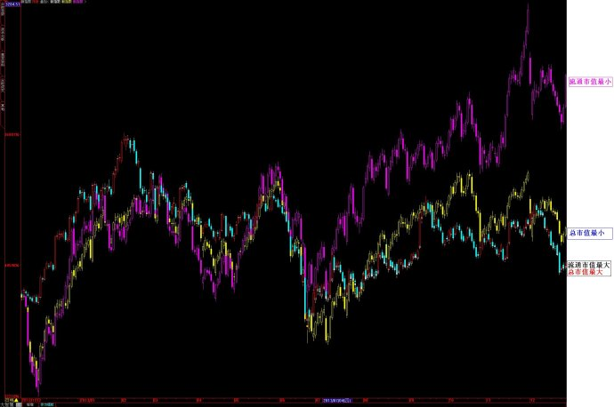
非常有意思的是，“总市值最大100股”指数与“流通市值最大100股”指数这两者竟然完全重合了，几乎看不出区别，但它们的年度涨幅约为4%。上图中的黄线为“总市值最小100股”，其年度涨幅为26%。上图中的份线为“流通市值最小100股”，其年度涨幅为50%。
可见，“流通市值最小100股”年度最高，所以，流通市值小也是牛股基因之一。
7、行业分析
（1）“涨幅最高100股”行业分布：
信息技术：25
机械仪表：19
电
子：11
文化传媒：9
生物医药：5
造纸印刷：5
石油化工：4
社会服务：4
沪自贸区：3
食
品：2
交通仓储：2
石油服务：2
其
它：9
需要说明的是，在以上统计中，环保与医疗器械也归入了机械仪表行业，而在造纸印刷业中，则产生了诸如冠豪高新、鸿博股份这样的牛股。
既然“涨幅最高100股”出现在以上行业，那么，以上行业的年度涨幅到底是怎样的呢？为此，我统计了一下年度涨幅最高的行业指数，结果如下：
（2）行业板块指数年度涨幅前20名摘录
网络游戏：110%
计算机 ：96%
教育传媒：90%
小盘股 ：70%
云计算 ：72%
数字电视：57%
沪自贸区：57%
电
器：54%
医
药：45%
仪电仪表：38%
造纸印刷：38%
可见，“涨幅最高100股”主要分布在那些年度涨幅最高的热门板块与行业之中。所以，从热门行业里选股，或者说，自上而下进行选股，在今年就是一种可行的策略。
（未完待续）